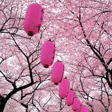
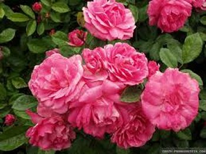

EPÍLOGO
Acompanhando os
prodigiosos acontecimentos de Akita, podemos perceber com bastante pesar, a
tristeza Divina em face do 
É comum lermos nos jornais e revistas, que a recente tragédia ocorrida no Japão com o violento terremoto que originou um terrível “tsunami”, que destruiu tantas cidades e esperanças humanas, e causou tantas mortes, foi um aviso Divino do que poderá acontecer, se a humanidade não buscar o caminho da conversão.
DEUS é só Amor, é Bondade e Misericórdia infinita que quer o bem de todos nós e jamais, utilizaria uma catástrofe “como aviso”, como prenúncio de um mal que ELE poderá trazer a humanidade como forma de castigo e punição. O limite da paciência do PAI ETERNO não consegue ser atingido pelo insólito e desastroso comportamento humano, porque, para evitar que isto aconteça, nossa MÃE SANTÍSSIMA tem interferido e maternalmente intercede em nosso benefício e com JESUS, procuram consolar o SAGRADO CORAÇÃO DO ETERNO PAI. As Aparições da VIRGEM MARIA, se constituem num estimulo a conversão humana, colocando em evidência a grandeza indizível do AMOR DIVINO, que quer o bem de todos nós e quer nos unir a TRINDADE SANTÍSSIMA, de onde um dia, cada um de nós, nasceu para a vida.
O que aconteceu no Japão, foi um acidente da própria natureza, que pode ocorrer em qualquer parte do mundo. Os estudiosos e especialistas elaboraram teorias de que no inicio da criação, os Continentes estavam todos unidos, formando um bloco único, denominado Panjeia. Com a teoria da expansão dos Continentes, baseada no estudo da expansão dos fundos oceânicos, em função da movimentação do magma, que é a camada logo abaixo da crosta terrestre, os Continentes se separaram. Assim, não é difícil observar que o contorno da America do Sul, tão distante do Continente Africano, nos oferece uma idéia, de que um estava unido ao outro há muitos séculos passados. Por outro lado, a crosta (camada) que envolve a Terra não é contínua, ela se divide em placas grandes, que também se fragmentam em varias partes, chamadas “placas tectônicas”. Quando há um choque ou fricção entre as placas, proveniente da movimentação do magma que está logo abaixo da crosta terrestre, pode ocorrer os terremotos, e em consequência, também os “tsunamis”, se os terremotos ocorrerem no mar.
Para confirmar o que acabamos de expor, na Sagrada Escritura, no Livro de São Lucas, encontrarão os seguintes versículos: “Neste momento vieram algumas pessoas que LHE contaram (a JESUS) o que aconteceu com os galileus, cujo sangue Pilatos havia misturado com o das suas vítimas. Tomando a palavra ELE (JESUS) disse: Acreditais que por terem sofrido tal sorte, esses galileus fossem mais pecadores do que todos os outros galileus? Não, EU vos digo; todavia, se não vos converterdes, perecereis todos do mesmo modo. Ou os dezoito, que a torre de Siloé matou em sua queda, julgam que a sua culpa tenha sido maior do que a de todos os habitantes de Jerusalém? Não, EU vos digo , mas se não vos converterdes, perecereis todos de modo semelhante”. (Lc 13, 1-5)
Os Avisos de
NOSSA SENHORA, estão repletos de lágrimas, de dores e sofrimento, sobretudo,
envolvidos por um denso e incomparável 
Claro que sim. Cremos que este é um decisivo momento para uma reflexão, uma meditação transformadora, que nos ensejará a mudança da criatura velha que somos, cevada e viciada nas artimanhas do maligno, na criatura nova, cheia de esperanças e de ideais, com o coração vibrando em busca do DEUS Verdadeiro.
Que este lembrete, sirva como um veemente convite a todos nós, que almejamos viver e trabalhar normalmente, ganhando o pão de cada dia honestamente, para o nosso sustento e de nossa família, e que também, possamos manter o coração aberto e elevado, sempre na direção do SENHOR, desejando alcançar a felicidade completa e definitiva, que ELE Mesmo quer para cada um de nós.
Akita nos dá um Aviso sério, que completa as Mensagens de NOSSA SENHORA em Fátima e em Garabandal. Por isso mesmo, é muito importante entendermos que o Amor, a Bondade e a Misericórdia DIVINA, caminham ao lado do Direito e da Justiça do CRIADOR.
APOSTOLADO DOS SAGRADOS CORAÇÕES
Para se comunicar conosco, favor clicar na figura abaixo:
FIRMAS QUE DIVULGAM O SITE